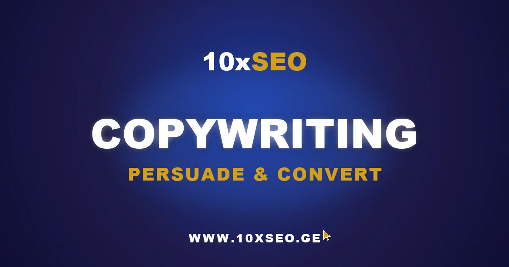

When a visitor lands on your site and leaves within a few seconds, it means your copy failed to answer their most important question. Copywriting is the discipline of capturing attention in that narrow window — because in business, words only matter when they produce a specific action. When a potential customer encounters your offer, they need a compelling reason why your solution is the right choice for them. Every phrase that doesn't serve that purpose reduces the effectiveness of your campaign and makes the decision harder, not easier.
What Does a Professional Copywriter Actually Do?
A professional copywriter's primary tool is language — but language with a precise purpose: to trigger a specific emotional and behavioral response in the reader. They understand the mechanics of decision-making. They know how fear, desire, trust, and urgency actually work in the human mind. At the same time, they have the ability to rapidly absorb a business, its audience's expectations, and its competitive landscape. They ask hard questions: Why does the customer really buy this product? What problem does this offer solve in their daily life? What words does the customer themselves use when describing their challenges?
A skilled copywriter is therefore also a strategist — one who understands that changing a single word can double sales or cut them in half. That's why they don't rely on intuition alone. They test continuously, analyze the data, compare variants, and refine copy based on what real numbers show, not what feels right.
The Anatomy of Persuasive Copy: Managing Emotion and Logic
Customers never buy a product — they buy an outcome, a feeling, or a solution. That's the foundational insight behind the anatomy of effective advertising copy: emotion awakens interest; logic justifies the decision.
The emotional message always comes first, because the human brain feels before it thinks. Effective copy touches a familiar sensation in its very first sentence — exhaustion, uncertainty, ambition, or fear. The moment a reader thinks "that's exactly my problem," the copy has achieved its primary goal: complete focus. Then logic follows — numbers, guarantees, and specific results that give the emotional impulse a rational foundation to stand on.
The most powerful copy says precisely what the customer couldn't articulate themselves. Psychologists call this the "verbalization effect" — when someone puts our internal experience into words, we instinctively trust them. A professional copywriter uses this strategically: they absorb the audience's vocabulary, rhythm, and everyday phrases, then return them to the reader with new precision. The message stops feeling like a sales attempt and starts feeling like genuine empathy. The barrier between business and customer dissolves, because people trust those who speak their language.
SEO Copywriting: Text That Gets Found and Gets Results
When a user types a query into Google, they're not looking for a website — they're looking for an answer. That's why copy must simultaneously satisfy the algorithm and the human reader. Search engines measure word count, structure, and time-on-page, but behind all those metrics lies the same fundamental question: did the reader get what they were looking for? If keywords are stuffed artificially and the content is hollow, search engines detect it immediately and penalize the page.
Professional SEO copywriting avoids this trap by starting with the language the target audience actually uses to describe their own needs. Crucially, effective copy always accounts for search intent — the real goal motivating someone to type a specific phrase. From that intent, the entire structure is built: from headline to closing line, so that the visitor knows within the first few seconds they've arrived at the right place.
The effectiveness of SEO copywriting isn't measured only by landing on page one — it's measured by how long users stay on the page and what they do next. These two metrics are directly connected: copy that genuinely addresses a problem in depth naturally builds trust, and the reader arrives at the next step — a purchase or a consultation — on their own. In that sense, SEO optimization and digital advertising are parts of the same strategy: both need a writer who knows who they're speaking to and what outcome they need to produce.
Curious about your site's conversion performance?
Get a free 72-hour SEO audit — we'll show you exactly what's holding your copy and rankings back.
Landing Pages and Product Descriptions: The Strategy That Changes Sales Numbers
A landing page's true purpose surfaces when a visitor faces a choice. It's the most critical point in the digital sales funnel, because the person who arrives there is still undecided. At this exact moment, copy determines everything: one vague headline sends the visitor back; one precise phrase eliminates every last doubt.
The same logic applies to product descriptions, where the focus must shift from technical specifications to real benefits. The most common mistake is listing features endlessly instead of describing the actual outcome the product creates in a person's life. "5,000 mAh battery" is a dry data point. "A full working day without reaching for the charger" is a solved problem. Whenever copy answers the question — "what do I actually get from this?" — online sales rise without any pressure. But showing benefits alone isn't enough: a clear, compelling call to action (CTA) must accompany every benefit claim.
Benefits, Trust, and Proof: The Three Pillars of Converting Copy
The bridge between benefit-focused copy and a strong CTA is social proof. An authentic customer story, a specific result, or a verified review adds the credibility that even the most brilliantly crafted advertising promise cannot replicate on its own. People trust people — especially when they're standing on the edge of a decision. If someone has already tried it, achieved a result, and confirms it publicly, the prospective customer's uncertainty shrinks. They see their own situation reflected in someone else's experience and think: "if it worked for them, there's a good chance it'll work for me."
When benefits are clearly articulated, the call to action is simple and obvious, and social proof is convincing, you have a complete structure that makes the decision feel natural — not forced. That's the inflection point the entire landing page is built around: the moment the choice becomes obvious and the customer is ready to take the next step.
Platform-Specific Copywriting: Where and How You Speak Matters
Effective copywriting always adapts to the platform where the message meets the customer. On social media, copy must be short, dynamic, and aimed directly at emotion. In that environment, people don't have time for lengthy explanations — they need an immediate impulse that sparks interest within the first few seconds.
On a website, the priorities shift. The visitor who arrives there is already interested, so they need more information, deeper reasoning, and logical coherence. Website copywriting is accordingly more argumentative and more structured — it earns attention rather than demanding it.
Start Speaking the Customer's Language
Every platform has its own rhythm and format, but one principle never changes: communication is effective when it resonates with the customer's own language. Copy written purely from the brand's perspective reads like a monologue. The moment messaging speaks to real human needs, it becomes a living dialogue.
That dialogue is the ultimate goal of copywriting — building a relationship that only becomes possible when the reader recognizes their own challenges in your words. That's why, before any strategy, the first step is always the same: start speaking the customer's language, and words will naturally become results.
Frequently Asked Questions
What is copywriting?
Copywriting is the practice of writing text — ads, websites, emails, landing pages, and product descriptions — with the specific goal of prompting a reader to take an action. It differs from content writing in its primary objective: where content informs or educates, copywriting persuades. Effective copywriting aligns emotional triggers with logical justification to guide readers toward a decision.
What does a professional copywriter actually do?
A professional copywriter studies the target audience before writing a single word. They research how customers describe their own problems, what fears and desires drive purchase decisions, and how competitors position themselves. From that research, they craft messaging that mirrors the reader's own language — creating the psychological effect of being understood, which dramatically lowers resistance to buying.
What is the difference between copywriting and content writing?
Content writing produces articles, guides, and educational pieces primarily aimed at informing readers and building authority over time. Copywriting produces persuasive text — ads, landing pages, email sequences, CTAs — aimed at generating an immediate response. In practice, the best SEO copywriting merges both: it ranks like content and converts like copy.
How does SEO copywriting differ from regular copywriting?
SEO copywriting serves two audiences simultaneously: the human reader and the search engine algorithm. It incorporates target keywords naturally, structures content with clear headings that match search intent, and prioritizes time-on-page signals that tell Google the content is genuinely useful. Done well, it ranks in organic search and converts the traffic it generates.
Why is a strong CTA important in copywriting?
A call to action (CTA) is the moment where persuasion becomes action. Even excellent copy that builds desire and trust fails commercially if the next step is unclear or uninspiring. A strong CTA is specific ("Get your free audit"), creates low perceived risk, and appears at the natural resolution point in the copy — after benefits have been shown and objections addressed.
Ready to make your copy convert?
Talk to 10xSEO about your copywriting and SEO strategy. Free 15-minute consultation.
Book Free Consultation